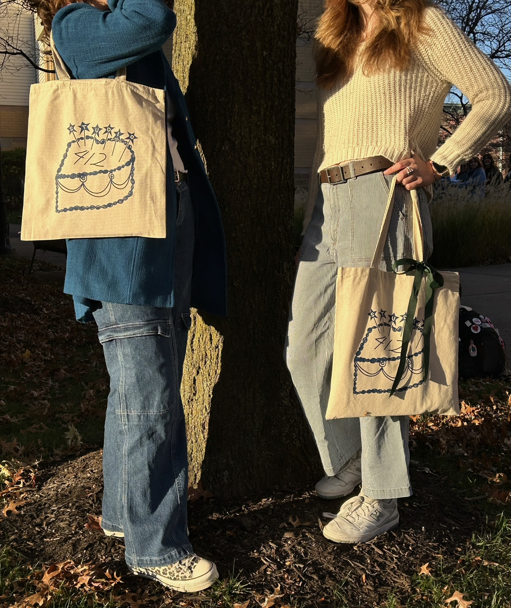
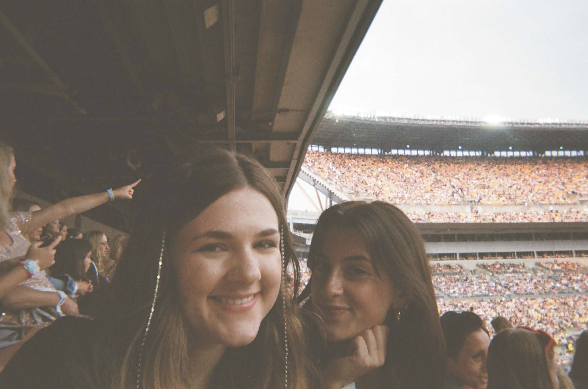
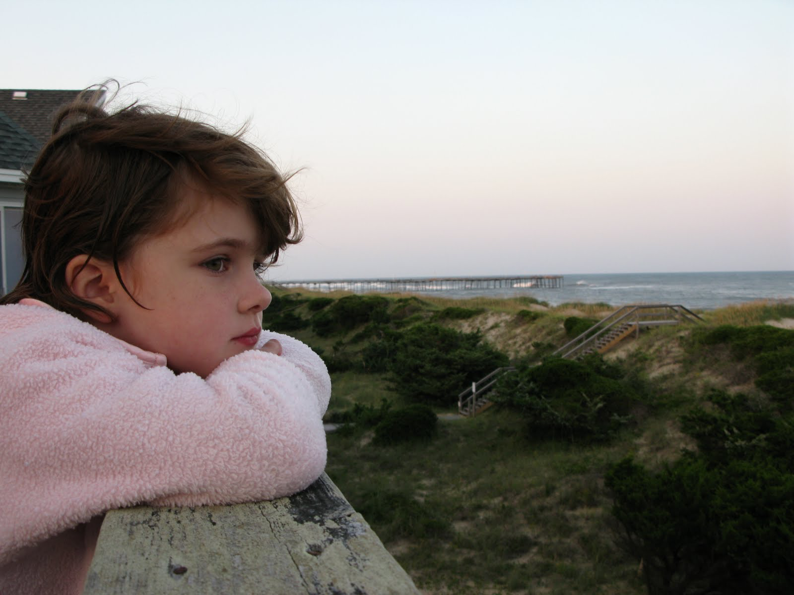

I am Nina ʚɞ
I'm interested in finding my niche in the field of DNID!
Hey ⋆⭒˚｡⋆✮⋆˙
I'm a sophomore majoring in Digital Narrative and Interactive Design (DNID). I'm hoping to add on an Information Science minor for the User Experience pathway. I was raised in Falls Church, Virginia, 15 minutes away from DC, by a software engineer and a graphic designer (partly explaining my love for anything artistic and/or technology related). I'm curious to see if this class will solidify my interest in user interation and design!




So why DNID? ñ†ãñ†ãñ†ã
As mentioned previously, my parents and the urban environment I grew up in has made me passionate about artistic expression and user interaction with technology. Thus, DNID seemed like the perfect fit as it combines the narrativity aspects of an English major and the software development aspects of a computer science major. My match made in heaven.
I have been exploring my passion for DNID outside of the classroom with Studio Four One Two, a literary blog on campus. I've enjoyed making graphics and helping brainstorm for their website.
UX Design & Me ‚úßÀö.Àö ‡ºò ‚ô° ‚ãÜ.ÀöùÑû
When deciding what I wanted to do with my life, my parents told me that they're still trying to figure that out. Thanks Mom and Dad, but how is that supposed to help? Well my parents told me I should explore a field that interests me, but won't constrict me from changing my career path in the future. I love working with people, so the human aspect of user experience has drawn me in. Moreover, I'm interested in a major that is applicable to multiple jobs. Maybe I won't work exactly with UX in the future, but I know that I could apply it to other career paths within computer science and the humanities. Thus, I see myself and UX design developing a great bond throughout the next few years.

THE FUTURE \(˚☐˚”)/
AHH!! The F Word!!! Kidding kidding. But I'm not going to lie when saying that the future does slightly terrify me. How am I supposed to know what I'm going to be when I grow up? I only know how to be a student. Well, in the meantime, I could really see myself following a path related to UX design for its graphic design elements and user interaction. Who knows if I'll go with creating, researching, or teaching with this path? That remains a mystery.


Why make a spark when you can light a fire?